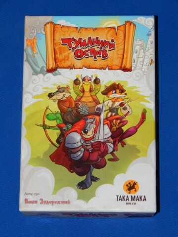

Туманний Острів
Туманний Острів
Переглянути цю сторінку англійською | Повернутись на Початкову сторінку
Правила гри
Переклад англійською оригінальних правил гри "Туманний Острів" від компанії "TAKAMAKA". Виключно для ознайомлення. Неофіційний переклад.

Фантастичний світ "Туманного острова" наповнений пригодами, інтригами та несподіванками!
Ще ніколи боротьба за владу не була такою цікавою і азартною одночасно.
Для кого ця гра? Це чудовий варіант сімейної чи дуельної гри на основі простих і всім відомих правил “хрестиків-нуликів” збагачений новими можливостями застосувати свою логіку, ерудицію та стратегічне мислення. Армія кожного гравця складається з вісімнадцяти персонажів, які, стаючи в ряди, приносять переможні бали. Однак остерігайтесь Шпигунів - вони шастають усюди та допомагають супернику! Вперед на пошуки пригод!
Розділи
- Компоненти і Терміни Гри
- Підготовка до Гри
- Ігровий Процес
- Кінець Гри і Підрахунок Балів
- Опис Стартових Персонажів
- Опис Персонажів "Найманці"
- Опис Карт Погоди
- Додаткова Інформація про Гру